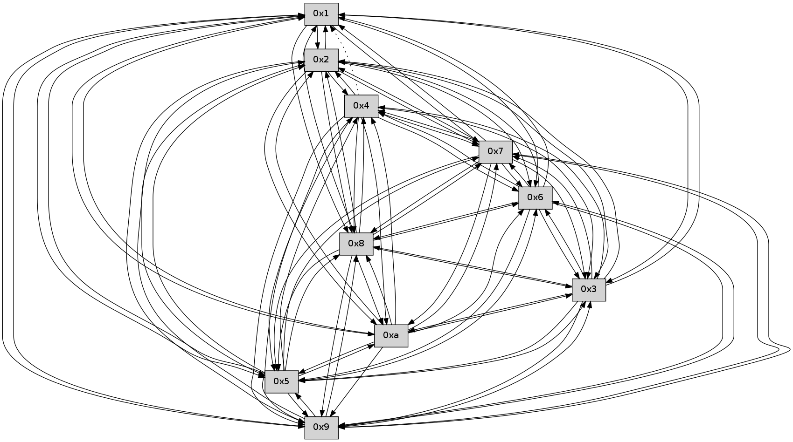

>> << IDX [start] -100 -25 -5 +0 +5 +25 +100 [350.358581066]
 Previous packets
----------------------------------------------------------------------
345.629784 beacon01(faad) #0 coord=01,02,03,04,05,06,07,0a,09,08 cycle=688.0ms assoc
-- color-indic=0 64 3f 08
345.639767 beacon02(faad) #0 coord=01,02,03,04,05,06,07,0a,09,08 cycle=688.0ms assoc 64 ac 39
345.649766 beacon03(faad) #0 coord=01,02,03,04,05,06,07,0a,09,08 cycle=688.0ms assoc 64 d6 74
345.659768 beacon04(faad) #0 coord=01,02,03,04,05,06,07,0a,09,08 cycle=688.0ms assoc 64 a1 9e
345.669766 beacon05(faad) #0 coord=01,02,03,04,05,06,07,0a,09,08 cycle=688.0ms assoc 64 db d3
345.679768 beacon06(faad) #0 coord=01,02,03,04,05,06,07,0a,09,08 cycle=688.0ms assoc 64 55 04
345.689767 beacon07(faad) #0 coord=01,02,03,04,05,06,07,0a,09,08 cycle=688.0ms assoc 64 2f 49
345.699773 beacon0a(faad) #0 coord=01,02,03,04,05,06,07,0a,09,08 cycle=688.0ms assoc 64 5e 42
345.709772 beacon09(faad) #0 coord=01,02,03,04,05,06,07,0a,09,08 cycle=688.0ms assoc 64 d0 95
345.719772 beacon08(faad) #0 coord=01,02,03,04,05,06,07,0a,09,08 cycle=688.0ms assoc 64 aa d8
345.733946 [Hello(2): seq=222 sym=4,5,7,6,3,9,8,10,1 sysInfo= stat=4:3,0,0,0/5:5,0,0,0/7:6,0,0,0/6:14,0,0,0/3:7,0,0,0/9:2,0,0,0/8:15,0,0,0/10:12,0,0,0/1:3,0,0,0]
345.736510 [Hello(1): seq=133 sym=2,9,5,10,3,8,6,7 mpr= sysInfo= stat=2:13,0,0,0/9:13,0,0,0/5:0,0,0,0/10:1,0,0,0/3:10,0,0,0/8:12,0,0,0/6:2,0,0,0/7:8,0,0,0]
----------------------------------------------------------------------
346.417920 beacon01(faad) #0 coord=01,02,03,04,05,06,07,0a,09,08 cycle=688.0ms assoc
-- color-indic=0 64 83 0d
346.427901 beacon02(faad) #0 coord=01,02,03,04,05,06,07,0a,09,08 cycle=688.0ms assoc 64 10 3c
346.437905 beacon03(faad) #0 coord=01,02,03,04,05,06,07,0a,09,08 cycle=688.0ms assoc 64 6a 71
346.447903 beacon04(faad) #0 coord=01,02,03,04,05,06,07,0a,09,08 cycle=688.0ms assoc 64 1d 9b
346.457902 beacon05(faad) #0 coord=01,02,03,04,05,06,07,0a,09,08 cycle=688.0ms assoc 64 67 d6
346.467903 beacon06(faad) #0 coord=01,02,03,04,05,06,07,0a,09,08 cycle=688.0ms assoc 64 e9 01
346.477904 beacon07(faad) #0 coord=01,02,03,04,05,06,07,0a,09,08 cycle=688.0ms assoc 64 93 4c
346.487907 beacon0a(faad) #0 coord=01,02,03,04,05,06,07,0a,09,08 cycle=688.0ms assoc 64 e2 47
346.497911 beacon09(faad) #0 coord=01,02,03,04,05,06,07,0a,09,08 cycle=688.0ms assoc 64 6c 90
346.507908 beacon08(faad) #0 coord=01,02,03,04,05,06,07,0a,09,08 cycle=688.0ms assoc 64 16 dd
346.519688 [Hello(9): seq=168 sym=5,2,3,4,7,6,8,1 sysInfo= stat=5:6,0,0,0/2:4,0,0,0/3:3,0,0,0/4:13,0,0,0/7:6,0,0,0/6:12,0,0,0/8:15,0,0,0/1:10,0,0,0]
346.522398 [Hello(10): seq=157 sym=6,3,2,5,9,8,7,4,1 sysInfo= stat=6:7,0,0,0/3:3,0,0,0/2:10,0,0,0/5:9,0,0,0/9:7,0,0,0/8:12,0,0,0/7:13,0,0,0/4:5,0,0,0/1:2,0,0,0]
346.526233 [Hello(7): seq=225 sym=2,3,5,6,4,8,9,10,1 sysInfo= stat=2:15,0,0,0/3:13,0,0,0/5:5,0,0,0/6:8,0,0,0/4:3,0,0,0/8:15,0,0,0/9:1,0,0,0/10:12,0,0,0/1:7,0,0,0]
346.530825 [Hello(6): seq=225 sym=2,3,5,4,7,9,8,1 sysInfo= stat=2:2,0,0,0/3:15,0,0,0/5:2,0,0,0/4:10,0,0,0/7:1,0,0,0/9:6,0,0,0/8:4,0,0,0/1:6,0,0,0]
----------------------------------------------------------------------
347.206053 beacon01(faad) #0 coord=01,02,03,04,05,06,07,0a,09,08 cycle=688.0ms assoc
-- color-indic=0 64 47 03
347.216035 beacon02(faad) #0 coord=01,02,03,04,05,06,07,0a,09,08 cycle=688.0ms assoc 64 d4 32
347.226037 beacon03(faad) #0 coord=01,02,03,04,05,06,07,0a,09,08 cycle=688.0ms assoc 64 ae 7f
347.236036 beacon04(faad) #0 coord=01,02,03,04,05,06,07,0a,09,08 cycle=688.0ms assoc 64 d9 95
347.246037 beacon05(faad) #0 coord=01,02,03,04,05,06,07,0a,09,08 cycle=688.0ms assoc 64 a3 d8
347.256036 beacon06(faad) #0 coord=01,02,03,04,05,06,07,0a,09,08 cycle=688.0ms assoc 64 2d 0f
347.266036 beacon07(faad) #0 coord=01,02,03,04,05,06,07,0a,09,08 cycle=688.0ms assoc 64 57 42
347.276043 beacon0a(faad) #0 coord=01,02,03,04,05,06,07,0a,09,08 cycle=688.0ms assoc 64 26 49
347.286042 beacon09(faad) #0 coord=01,02,03,04,05,06,07,0a,09,08 cycle=688.0ms assoc 64 a8 9e
347.296042 beacon08(faad) #0 coord=01,02,03,04,05,06,07,0a,09,08 cycle=688.0ms assoc 64 d2 d3
347.307209 [Hello(5): seq=226 sym=7,6,4,3,1,9,8,10,2 sysInfo= stat=7:12,0,0,0/6:0,0,0,0/4:5,0,0,0/3:0,0,0,0/1:5,0,0,0/9:9,0,0,0/8:13,0,0,0/10:14,0,0,0/2:14,0,0,0]
347.310545 [Hello(2): seq=223 sym=4,5,7,6,3,9,8,10,1 sysInfo= stat=4:3,0,0,0/5:5,0,0,0/7:7,0,0,0/6:15,0,0,0/3:7,0,0,0/9:3,0,0,0/8:15,0,0,0/10:13,0,0,0/1:4,0,0,0]
347.313859 [Hello(4): seq=226 sym=5,7,6,2,3,9,8,10,1 sysInfo= stat=5:10,0,0,0/7:14,0,0,0/6:1,0,0,0/2:0,0,0,0/3:2,0,0,0/9:10,0,0,0/8:1,0,0,0/10:2,0,0,0/1:7,0,0,0]
347.320084 [Hello(3): seq=226 sym=1,7,6,2,4,8,9,10,5 sysInfo= stat=1:6,0,0,0/7:9,0,0,0/6:4,0,0,0/2:12,0,0,0/4:2,0,0,0/8:8,0,0,0/9:0,0,0,0/10:10,0,0,0/5:7,0,0,0]
----------------------------------------------------------------------
347.994186 beacon01(faad) #0 coord=01,02,03,04,05,06,07,0a,09,08 cycle=688.0ms assoc
-- color-indic=0 64 fb 06
348.004169 beacon02(faad) #0 coord=01,02,03,04,05,06,07,0a,09,08 cycle=688.0ms assoc 64 68 37
348.014168 beacon03(faad) #0 coord=01,02,03,04,05,06,07,0a,09,08 cycle=688.0ms assoc 64 12 7a
348.024169 beacon04(faad) #0 coord=01,02,03,04,05,06,07,0a,09,08 cycle=688.0ms assoc 64 65 90
348.034169 beacon05(faad) #0 coord=01,02,03,04,05,06,07,0a,09,08 cycle=688.0ms assoc 64 1f dd
348.044167 beacon06(faad) #0 coord=01,02,03,04,05,06,07,0a,09,08 cycle=688.0ms assoc 64 91 0a
348.054169 beacon07(faad) #0 coord=01,02,03,04,05,06,07,0a,09,08 cycle=688.0ms assoc 64 eb 47
348.064174 beacon0a(faad) #0 coord=01,02,03,04,05,06,07,0a,09,08 cycle=688.0ms assoc 64 9a 4c
348.074175 beacon09(faad) #0 coord=01,02,03,04,05,06,07,0a,09,08 cycle=688.0ms assoc 64 14 9b
348.084174 beacon08(faad) #0 coord=01,02,03,04,05,06,07,0a,09,08 cycle=688.0ms assoc 64 6e d6
348.095975 [Hello(10): seq=158 sym=6,3,2,5,9,8,7,4,1 sysInfo= stat=6:8,0,0,0/3:4,0,0,0/2:11,0,0,0/5:9,0,0,0/9:7,0,0,0/8:12,0,0,0/7:14,0,0,0/4:6,0,0,0/1:3,0,0,0]
348.099110 [Hello(9): seq=169 sym=5,2,3,4,7,6,8,1 sysInfo= stat=5:7,0,0,0/2:5,0,0,0/3:4,0,0,0/4:14,0,0,0/7:7,0,0,0/6:13,0,0,0/8:0,0,0,0/1:10,0,0,0]
348.105192 [Hello(8): seq=169 sym=5,2,3,4,7,6,9,10,1 sysInfo= stat=5:14,0,0,0/2:1,0,0,0/3:15,0,0,0/4:5,0,0,0/7:8,0,0,0/6:12,0,0,0/9:13,0,0,0/10:10,0,0,0/1:9,0,0,0]
348.109028 [Hello(7): seq=226 sym=2,3,5,6,4,8,9,10,1 sysInfo= stat=2:0,0,0,0/3:14,0,0,0/5:6,0,0,0/6:9,0,0,0/4:4,0,0,0/8:15,0,0,0/9:1,0,0,0/10:12,0,0,0/1:7,0,0,0]
348.113515 [Hello(6): seq=226 sym=2,3,5,4,7,9,8,1 sysInfo= stat=2:3,0,0,0/3:0,0,0,0/5:3,0,0,0/4:11,0,0,0/7:1,0,0,0/9:6,0,0,0/8:4,0,0,0/1:6,0,0,0]
----------------------------------------------------------------------
348.782317 beacon01(faad) #0 coord=01,02,03,04,05,06,07,0a,09,08 cycle=688.0ms assoc
-- color-indic=0 64 cf 1e
348.792300 beacon02(faad) #0 coord=01,02,03,04,05,06,07,0a,09,08 cycle=688.0ms assoc 64 5c 2f
348.802299 beacon03(faad) #0 coord=01,02,03,04,05,06,07,0a,09,08 cycle=688.0ms assoc 64 26 62
348.812301 beacon04(faad) #0 coord=01,02,03,04,05,06,07,0a,09,08 cycle=688.0ms assoc 64 51 88
348.822301 beacon05(faad) #0 coord=01,02,03,04,05,06,07,0a,09,08 cycle=688.0ms assoc 64 2b c5
348.832301 beacon06(faad) #0 coord=01,02,03,04,05,06,07,0a,09,08 cycle=688.0ms assoc 64 a5 12
348.842299 beacon07(faad) #0 coord=01,02,03,04,05,06,07,0a,09,08 cycle=688.0ms assoc 64 df 5f
348.852304 beacon0a(faad) #0 coord=01,02,03,04,05,06,07,0a,09,08 cycle=688.0ms assoc 64 ae 54
348.862306 beacon09(faad) #0 coord=01,02,03,04,05,06,07,0a,09,08 cycle=688.0ms assoc 64 20 83
348.872306 beacon08(faad) #0 coord=01,02,03,04,05,06,07,0a,09,08 cycle=688.0ms assoc 64 5a ce
348.883463 [Hello(5): seq=227 sym=7,6,4,3,1,9,8,10,2 sysInfo= stat=7:13,0,0,0/6:1,0,0,0/4:6,0,0,0/3:1,0,0,0/1:5,0,0,0/9:10,0,0,0/8:14,0,0,0/10:15,0,0,0/2:15,0,0,0]
348.887432 [Hello(3): seq=227 sym=1,7,6,2,4,8,9,10,5 sysInfo= stat=1:6,0,0,0/7:10,0,0,0/6:5,0,0,0/2:12,0,0,0/4:2,0,0,0/8:9,0,0,0/9:1,0,0,0/10:11,0,0,0/5:7,0,0,0]
348.890760 [Hello(2): seq=224 sym=4,5,7,6,3,9,8,10,1 sysInfo= stat=4:4,0,0,0/5:5,0,0,0/7:8,0,0,0/6:0,0,0,0/3:8,0,0,0/9:4,0,0,0/8:0,0,0,0/10:14,0,0,0/1:4,0,0,0]
348.896907 [Hello(4): seq=227 sym=5,7,6,2,3,9,8,10 asym=1 sysInfo= stat=5:10,0,0,0/7:15,0,0,0/6:2,0,0,0/2:0,0,0,0/3:3,0,0,0/9:11,0,0,0/8:2,0,0,0/10:3,0,0,0/1:7,0,0,0]
348.899874 [Hello(1): seq=135 sym=2,9,5,10,3,8,6,7 sysInfo= stat=2:14,0,0,0/9:15,0,0,0/5:0,0,0,0/10:3,0,0,0/3:11,0,0,0/8:13,0,0,0/6:4,0,0,0/7:10,0,0,0]
----------------------------------------------------------------------
349.570448 beacon01(faad) #0 coord=01,02,03,04,05,06,07,0a,09,08 cycle=688.0ms assoc
-- color-indic=0 64 73 1b
349.580430 beacon02(faad) #0 coord=01,02,03,04,05,06,07,0a,09,08 cycle=688.0ms assoc 64 e0 2a
349.590429 beacon03(faad) #0 coord=01,02,03,04,05,06,07,0a,09,08 cycle=688.0ms assoc 64 9a 67
349.600430 beacon04(faad) #0 coord=01,02,03,04,05,06,07,0a,09,08 cycle=688.0ms assoc 64 ed 8d
349.610431 beacon05(faad) #0 coord=01,02,03,04,05,06,07,0a,09,08 cycle=688.0ms assoc 64 97 c0
349.620431 beacon06(faad) #0 coord=01,02,03,04,05,06,07,0a,09,08 cycle=688.0ms assoc 64 19 17
349.630432 beacon07(faad) #0 coord=01,02,03,04,05,06,07,0a,09,08 cycle=688.0ms assoc 64 63 5a
349.640436 beacon0a(faad) #0 coord=01,02,03,04,05,06,07,0a,09,08 cycle=688.0ms assoc 64 12 51
349.650437 beacon09(faad) #0 coord=01,02,03,04,05,06,07,0a,09,08 cycle=688.0ms assoc 64 9c 86
349.660437 beacon08(faad) #0 coord=01,02,03,04,05,06,07,0a,09,08 cycle=688.0ms assoc 64 e6 cb
349.671920 [Hello(7): seq=227 sym=2,3,5,6,4,8,9,10,1 sysInfo= stat=2:1,0,0,0/3:15,0,0,0/5:7,0,0,0/6:10,0,0,0/4:5,0,0,0/8:15,0,0,0/9:1,0,0,0/10:12,0,0,0/1:8,0,0,0]
349.675580 [Hello(10): seq=159 sym=6,3,2,5,9,8,7,4,1 sysInfo= stat=6:9,0,0,0/3:5,0,0,0/2:12,0,0,0/5:10,0,0,0/9:8,0,0,0/8:13,0,0,0/7:15,0,0,0/4:7,0,0,0/1:4,0,0,0]
349.678897 [Hello(9): seq=170 sym=5,2,3,4,7,6,8,1 sysInfo= stat=5:8,0,0,0/2:6,0,0,0/3:5,0,0,0/4:15,0,0,0/7:8,0,0,0/6:14,0,0,0/8:1,0,0,0/1:11,0,0,0]
349.684786 [Hello(6): seq=227 sym=2,3,5,4,7,9,8,1 sysInfo= stat=2:4,0,0,0/3:1,0,0,0/5:4,0,0,0/4:12,0,0,0/7:1,0,0,0/9:6,0,0,0/8:4,0,0,0/1:7,0,0,0]
349.690558 [Hello(8): seq=170 sym=5,2,3,4,7,6,9,10,1 sysInfo= stat=5:15,0,0,0/2:2,0,0,0/3:0,0,0,0/4:6,0,0,0/7:9,0,0,0/6:13,0,0,0/9:13,0,0,0/10:10,0,0,0/1:10,0,0,0]